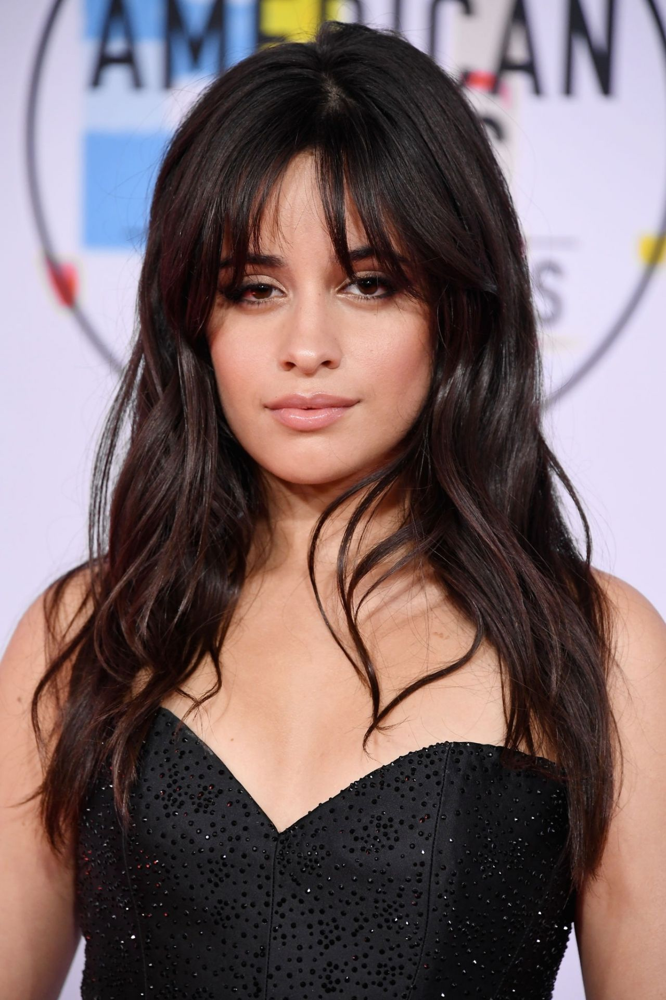
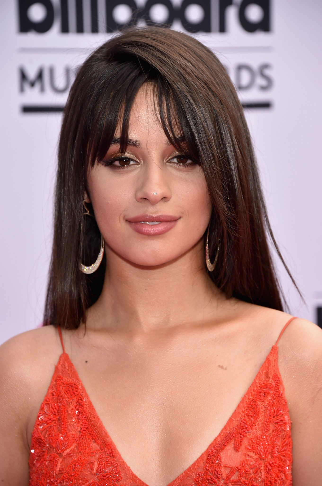

A vida da cantora
Nascida no dia 3 de março de 1997, em Havana, em Cuba, Camila Cabello já sabia que queria ser cantora desde a infância e, como presente de 15 anos, pediu para participar de um reality musical, que foi o pontapé de sua carreira. Antes de se mudar para os Estados Unidos, ainda criança, a artista morou no México. Em 2012, aos 15 anos, participou do X Factor USA, e foi selecionada para formar o grupo Fifth Harmony.
Como integrante da girlband, Cabello ganhou grande visibilidade e uma legião de fãs. O grupo é o primeiro grupo feminino a atingir e quebrar o recorde de um bilhão de visualizações nos clipes de "Worth It" e "Work from Home" no YouTube. Em 2016, a cubana anunciou que sairia da banda e, em dezembro, fez uma carta aberta sobre o ocorrido, afirmando que seguiria em carreira solo. Dando início aos trabalhos solo, em fevereiro de 2017, lançou "Love Incredible", uma colaboração com DJ norueguês Cashmere Cat.
Mais tarde, participou da faixa "Hey Ma", uma colaboração com Pitbull e J Balvin para a trilha sonora de Velozes e Furiosos 8. Após anunciar um disco inédito, publicou o primeiro single, nomeado "Crying In The Club". A música foi escrita por Sia e produzida por Benny Blanco e Cashmere Cat e teve sua primeira apresentação durante o Billboard Music Awards 2017.Como artista principal, Cabello lançou quatro singles que entraram no top 20 da Billboard Hot 100: "I Know What You Did Last Summer" com Shawn Mendes, "Bad Things" com Machine Gun Kelly, “Never Be the Same” e “Havana”. O disco de estreia, nomeado Camila, chegou ao mercado em janeiro de 2018. Camila descreve o álbum: "o álbum conta minha história da minha jornada da escuridão para a luz, de um tempo em que eu estava perdida para um momento em que eu me encontrei novamente." Ela escreveu: "Foi uma espécie de capítulo que você nunca quer ler em voz alta", e explicou que o processo de realização do álbum a ajudou a lidar com suas emoções. O material alcançou primeiro lugar na Billboard 200 simultaneamente com o single “Havana” em primeira posição na Billboard Hot 100.
 